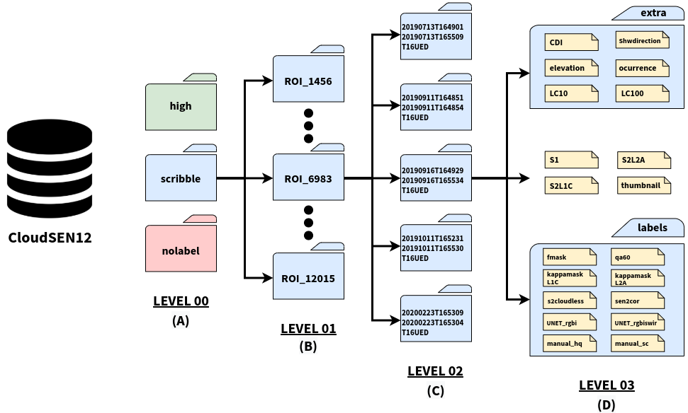

The CloudSEN12 dataset is available in the form of LZW-compressed COG (Cloud Optimized GeoTIFF) files, which can be accessed from the Science Data Bank).
For deep learning practitioners, the dataset is also provided using memory-mapped files (np.memmap), which can be accessed from the following links:
We defined an IP as the primary atomic unit, representing a single spatio-temporal
component. Each IP has 49 assets and 31 properties. CloudSEN12 assets, as seen in Figure
below, are organized into four levels. The top-level includes three folders: high, scribble,
and no-label.

These folders correspond to the annotation categories high-quality (2000 ROIs),
scribble (2000 ROIs), and no annotation (5880 ROIs), respectively. In the second level,
the folders included data pertaining to a specific geographic location (ROI). The folder name
is the ROI ID. Since an ROI consists of five IPs at different cloud cover, each ROI folder
is subdivided into five folders whose names match the GEE Sentinel-2 product ID of the
specific IP.
This data is licensed by CloudSEN12 team under
a Creative Commons Attribution-NonCommercial 4.0 International
(CC BY-NC 4.0).